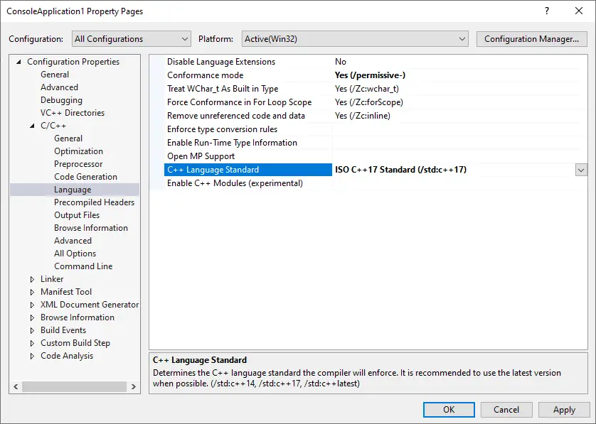
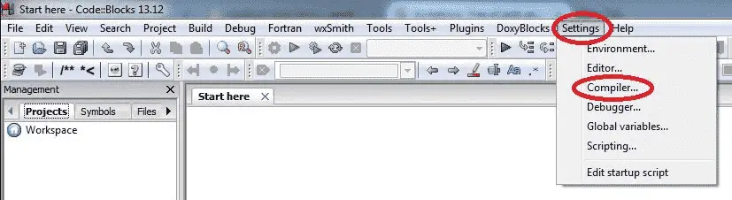
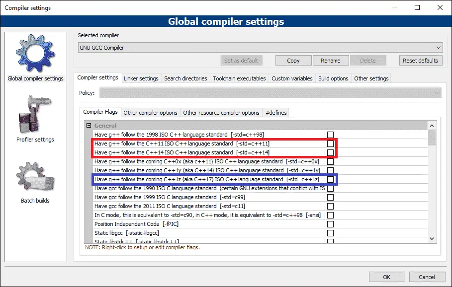

With many different versions of C++ available (C++98, C++03, C++11, C++14, C++17, C++20, C++23, etc…) how does your compiler know which one to use? Generally, a compiler will pick a standard to default to. Typically the default is not the most recent language standard -- many default to C++14, which is missing many of the latest and greatest features.
If you wish to use a different language standard (and you probably will), you’ll have to configure your IDE/compiler to do so.
The conventional names for language standards (e.g. C++20) are based on the year the language standard was published (or expected to be published). Because the year of publication is not actually known until it is close, language standards that are early in development sometimes use a development name instead. For example, C++20 is also known as C++2a.
| Publication Year | Formal Name | Conventional name | Development name | Notes |
|---|---|---|---|---|
| 2011 | ISO/IEC 14882:2011 | C++11 | C++0x | |
| 2014 | ISO/IEC 14882:2014 | C++14 | C++1y | |
| 2017 | ISO/IEC 14882:2017 | C++17 | C++1z | |
| 2020 | ISO/IEC 14882:2020 | C++20 | C++2a | |
| 2024 | ISO/IEC 14882:2024 | C++23 | C++2b | Finalized (technically complete) in 2023 |
| TBD | TBD | C++26 | C++2c |
As an aside…
C++11 has development name C++0x because it was originally expected to be published before 2010.
Which language standard should you choose?
In professional environments, it’s common to choose a language standard that is one or two versions back from the latest finalized standard (e.g. if C++20 were the latest finalized version, that means C++14 or C++17). This is typically done to ensure the compiler makers have had a chance to resolve defects, and so that best practices for new features are well understood. Where relevant, this also helps ensure better cross-platform compatibility, as compilers on some platforms may not provide full support for newer language standards immediately.
For personal projects and while learning, we recommend choosing the latest finalized standard, as there is little downside to doing so.
Tip
Many compilers offer “experimental” or “preview” support for features from the upcoming non-finalized language standards. Your IDE may offer this as an option in the settings where you configure your language standard, or you may be able to enable it manually using the upcoming language standard’s conventional name or development name.
Support for features from non-finalized language standards will be incomplete and possibly buggy.
Author’s note
This website currently targets the C++17 standard, meaning our lessons and examples assume your compiler is C++17 capable. Some C++20 and C++23 content is available for those with compatible compilers.
To take full advantage of all the lesson content, we recommend using the latest language standard your compiler supports.
If your compiler doesn’t support C++17, we recommend upgrading to one that does, or consider using an online compiler that supports C++17 or newer while learning.
A reminder
When changing your language standard (or any other project setting), make the change to all build configurations.
Setting a language standard in Visual Studio
As of the time of writing, Visual Studio 2022 defaults to C++14 capabilities, which does not allow for the use of newer features introduced in C++17 and C++20.
To use these newer features, you’ll need to enable a newer language standard. Unfortunately, there is currently no way to do this globally -- you must do so on a project-by-project basis.
Warning
With Visual Studio, you will need to reselect your language standard every time you create a new project.
To select a language standard, open your project, then go to Project menu > (Your application’s Name) Properties, then open Configuration Properties > C/C++ > Language.

First, make sure the Configuration is set to “All Configurations”.
From there, you can set the C++ Language Standard to the version of C++ you wish to use.
Tip
We recommend choosing the latest standard “ISO C++ Latest (/std:c++latest)”, which will ensure you can use as many features as your compiler supports.
Make sure you’re selecting the language standard from the dropdown menu (don’t type it out).
Related content
For more information on Visual Studio language standard settings, Microsoft has a Visual Studio language standard reference document.
Setting a language standard in Code::Blocks
Code::Blocks may default to a pre-C++11 language standard. You’ll definitely want to check and ensure a more modern language standard is enabled.
The good news is that Code::Blocks allows setting your language standard globally, so you can set it once (rather than per-project). To do so, go to Settings menu > Compiler…:

Then find the checkboxes labeled Have g++ follow the C++XX ISO C++ language standard [-std=c++XX], where XX is some number (e.g. 20, 17, etc…) representing a language standard:

If C++23, C++20, or C++17 appears in this list, select the one that represents the latest ISO standard (e.g. select Have g++ follow the C++20 ISO language standard). If you see GNU standards in this list as well, ignore them.
If you do not see C++17 in this list, upgrade to the latest version of Code::Blocks.
Warning
As of the time of writing, the current version of Code::Blocks (20.03) is using an outdated compiler (GCC 8.1.0).
We recommend updating your compiler by updating MinGW. The procedure to do so can be found under the Code::Blocks section in lesson 0.6 -- Installing an Integrated Development Environment (IDE).
Tip
After updating to the latest version of MinGW, you can see if newer language standard checkboxes appear in the Settings menu > Compiler… menu. If not, you can manually select a C++ version as follows:
- Find the “Other compiler options tab” of the “Global Compiler Settings” dialog.
- Add one of the following compiler options:
-std=c++11,-std=c++14,-std=c++17,-std=c++20, or-std=c++23(to enable C++11/14/17/20/23 support respectively). You can also try the latest code name (e.g.-std=c++2c) for experimental support for features from the upcoming language standard.
Setting a language standard in GCC/G++/Clang
For GCC/G++/Clang, you can use compiler options -std=c++11, -std=c++14, -std=c++17, -std=c++20, or -std=c++23 (to enable C++11/14/17/20/23 support respectively). If you have GCC 8 or 9, you’ll need to use -std=c++2a for C++20 support instead. You can also try the latest code name (e.g. -std=c++2c) for experimental support for features from the upcoming language standard.
Setting a language standard for VS Code
For VS Code, you can follow the rules above for setting a language standard in GCC/G++/Clang.
Place the appropriate language standard flag (including the double quotes and comma) in the tasks.json configuration file, in the "args" section, on its own line before "${file}".
We also want to configure Intellisense to use the same language standard. For C++20, in settings.json, change or add the following setting on its own line: "C_Cpp.default.cppStandard": "c++20".
What language standard is my compiler currently using?
This has been moved to the next lesson. See 0.13 -- What language standard is my compiler using?.
Exporting your configuration
Having to reselect all of your settings options every time you create a new project is burdensome. Fortunately, most IDEs provide a way to export your settings. This is typically done by creating a new project template with the settings you want, and then selecting that project template when you create a new project.
For Visual Studio users
In Visual Studio, this option is available via Project -> Export Template. Select “Project template”, add a name and optional description (e.g. C++20 console application), and then click “Finish”.
Next time you create a new project, you’ll see this template show up in your list of project templates.
Once you create a new project with this template, it may not open any files. You can open up your .cpp file in the Solution Explorer window by going to Solution -> <Project Name> -> Source Files -> <template name>.cpp.
Feb 2025: Reader Mingtao Yue kindly left a comment providing some workarounds to a couple of bugs in this feature.
For Code::Blocks users
In Code::Blocks, choose File -> Save project as template. Give your template a title, and save.
When you create a new project, you will find this template under the “User templates” option.
Where can I view the C++ standards document?
Each C++ language standard is described by a standards document, which is a formal technical document that is the authoritative source for the rules and requirements of a given language standard. The standards document is not designed for learning -- rather, it’s designed for compiler writers to be able to implement new language standards accurately. You will occasionally see people quoting the standards document when explaining how something works.
The approved C++ standards document for a given language standard is not available for free. There is a link to purchase the latest standard here.
When a new language standard is being developed, draft standards documents are published for review. These drafts are available online for free. The last draft standard before the approved standard is generally close enough to the official standard to use for most purposes. You can find the draft standards here.
Compilers often have incomplete support for new language features
Even after a language standard is finalized, compilers supporting that language standard often still have missing, partial, or buggy support for certain features.
If you attempt to compile a program that should compile but mysteriously won’t, it’s likely because of one of two reasons:
- Your compiler is configured to use an older language standard that doesn’t support the feature you are using. Try selecting a newer language standard and compile your program again. You can use the program in lesson 0.13 -- What language standard is my compiler using? to validate that you have configured your language standard selection correctly.
- The version of the compiler you are running may have missing, partial, or buggy support for a feature you are using.
The CPPReference website tracks compiler support for each feature per language standard. You can find those support tables linked from their home page, top right, under “Compiler Support” (by language standard). For example, you can see which C++23 features are supported here.
If a newer version of your compiler supports the problematic feature, you can upgrade your compiler to the latest version and try compiling your program again. If the latest version of your compiler still doesn’t support the feature you are trying to use, you can either try a different compiler that does provide support, or find a solution using a different set of features.